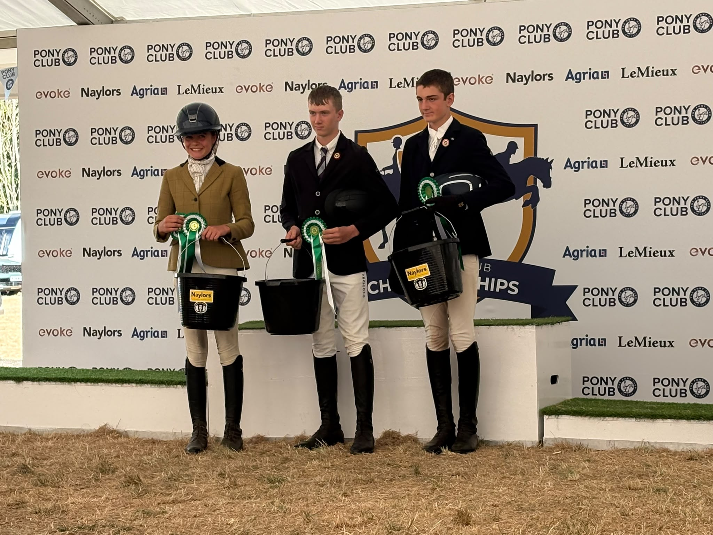

I love when i get to recive an old broken chair and can restore it to it fomer glorry so it look's just as good as when somone first got it.
← Back to home
I love weaving chairs and how much fun it is to recane a chair. it is also a nice carm time when i have a break inbetween my lessons as a bit of minfulness
i use the seven step prosses which i will go into more bellow in a minute